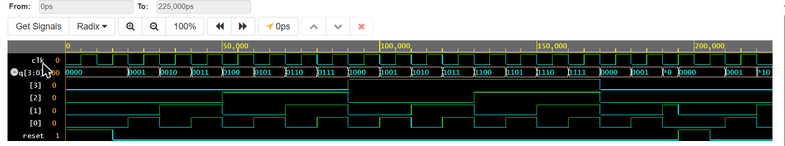

A counter built from four flip-flops, written in Verilog, simulated with Icarus Verilog and viewed as a waveform in GTKWave.
See the waveformSee the codeGitHub repo0000 to 1111). After 15 it wraps back to 0 and keeps going.
It is called a ripple counter because the clock only goes to the first flip-flop. Each next flip-flop is clocked by the output of the one before it, so the change ripples from the first bit to the last, like a row of dominoes.
d to output q. If reset goes high it clears q to 0 straight away.d = ~q) and every clock pulse flips the output. Its output is the clock divided by 2.q[0] is clocked by clk, q[1] by q[0], q[2] by q[1], q[3] by q[2]. Each stage is half as fast, which is how binary counting works.reset goes to all four flip-flops
| Bit | Clocked by | Toggles every | Frequency (clk = 100 MHz) |
|---|---|---|---|
q[0] | clk | 1 clock | 50 MHz |
q[1] | q[0] | 2 clocks | 25 MHz |
q[2] | q[1] | 4 clocks | 12.5 MHz |
q[3] | q[2] | 8 clocks | 6.25 MHz |
Ripple delay: each flip-flop waits for the one before it, so delays add up. That is why this counter is simple but slower than a synchronous counter, where all flip-flops share one clock.

| Signal | Meaning |
|---|---|
clk | The clock, period 10 ns |
reset | High at the start, low from 15 ns so counting starts, high again at 195 ns to show a reset mid-count |
q[3:0] | The whole counter as one hex number, 0 to F |
q[3]..q[0] | The four bits. q[0] is fastest, q[3] slowest |
The count goes 0, 1, 2 ... 9, A ... F, then wraps to 0 at 170 ns. At 195 ns reset drops q to 0 at once without waiting for a clock edge, which is what asynchronous reset means.
0 Output q = 0 20 Output q = 1 30 Output q = 2 ... 160 Output q = 15 170 Output q = 0 <- wraps after 15 180 Output q = 1 190 Output q = 2 195 Output q = 0 <- reset asserted mid-count 210 Output q = 1 220 Output q = 2
The first count is at 20 ns, not 10 ns, because reset is still high until 15 ns.
`timescale 1ns/1ps
// D flip-flop: negative-edge clock, asynchronous active-high reset
module D_FF(q, d, clk, reset);
output q;
input d, clk, reset;
reg q;
always @(posedge reset or negedge clk)
if (reset)
q = 1'b0;
else
q = d;
endmodule`timescale 1ns/1ps
// T flip-flop built from a D flip-flop and an inverter
module T_FF(q, clk, reset);
output q;
input clk, reset;
wire d;
D_FF dff0(q, d, clk, reset);
not n1(d, q); // not is a Verilog primitive; D = ~Q makes it toggle
endmodule`timescale 1ns/1ps
// Top block: 4-bit ripple carry counter
module ripple_carry_counter(q, clk, reset);
output [3:0] q;
input clk, reset;
// 4 instances of the T flip-flop; each is clocked by the previous stage's q
T_FF tff0(q[0], clk, reset);
T_FF tff1(q[1], q[0], reset);
T_FF tff2(q[2], q[1], reset);
T_FF tff3(q[3], q[2], reset);
endmodule`timescale 1ns/1ps
// Stimulus block (testbench): drives clk and reset, prints q
module stimulus;
reg clk;
reg reset;
wire [3:0] q;
// instantiate the design block
ripple_carry_counter r1(q, clk, reset);
// clock: toggles every 5 ns (period 10 ns)
initial clk = 1'b0;
always #5 clk = ~clk;
// control reset
initial begin
reset = 1'b1; // reset the counter
#15 reset = 1'b0; // release reset, counting starts
#180 reset = 1'b1; // reset again mid-count
#10 reset = 1'b0;
#20 $finish;
end
// waveform dump (for GTKWave) and console monitor
initial begin
$dumpfile("dump.vcd");
$dumpvars(0, stimulus);
end
initial $monitor($time, " Output q = %d", q);
endmoduleiverilog -o sim D_FF.v T_FF.v ripple_carry_counter.v stimulus.v vvp sim gtkwave dump.vcd --script view.tcl
On Windows just double-click run.bat. Get the files from the GitHub repo.